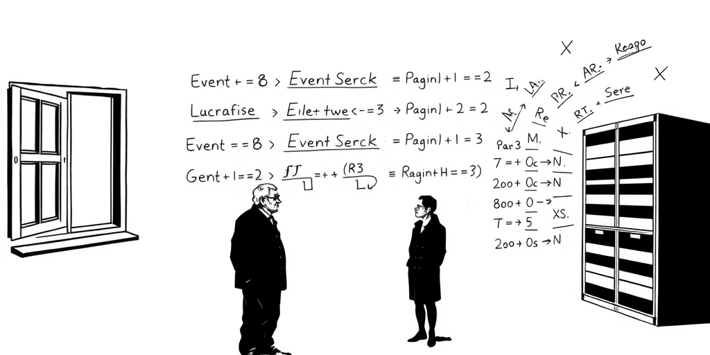
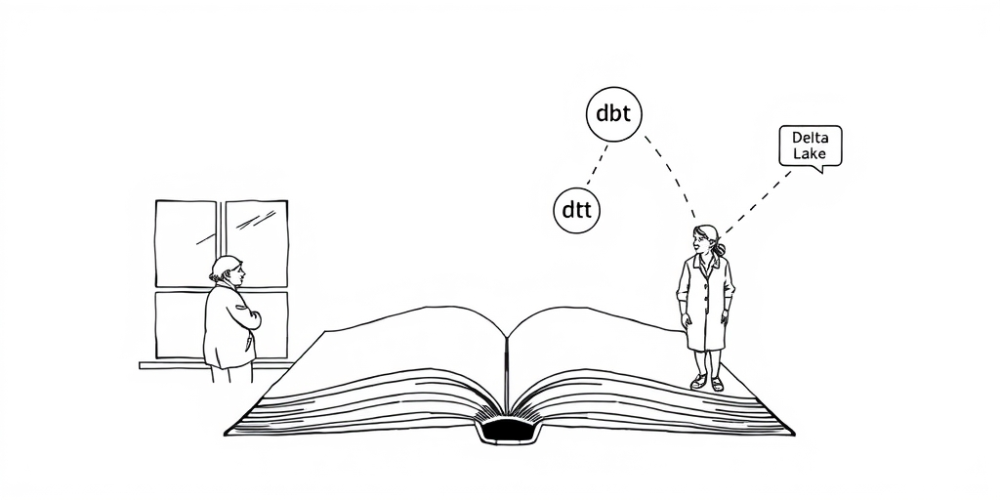

小汪老师的成长洞察 · 属于你的成长专栏
一个情报分析师盯着屏幕上的结论，忽然问：这个数字是怎么来的？如果底层数据库允许直接修改，这个问题永远没有答案。Palantir 用一条看似简单的规则——数据集不可变——把“可信度”铸进了产品底层。这条规则并非凭空发明，而是一个跨越二十年的学术思想谱系，在特定历史时刻被工程化落地的结果。
2003年，大部分企业的数据系统还活在 Oracle 和 SQL Server 的统治下。数据处理的标准动作是：数据进入某张表，直接 UPDATE 对应行，永远只保留“当前状态”。
这在交易系统里运行得很好，却有一个致命缺陷——历史状态被覆盖了。你的工资涨了，HR 系统 UPDATE 一行；但在审计眼里，上个月的那行数字已经不存在了。
情报和安全领域无法容忍这种设计。你必须能在法庭上证明这条数据的每一步处理都是合规的，而 UPDATE 式数据库里，来源已经被覆写。分析师面对的是一张只显示“现在”的快照，永远看不见这张快照是怎么拍出来的。

几乎在同一时期，学术界有一个思想在悄悄成熟，叫做 Event Sourcing。核心观点是：与其存储“当前状态”，不如存储“导致这个状态的所有事件”。状态是派生的，事件才是真相。
这个思想在金融领域早就有实践——账本从来不涂改，只追加分录，余额是计算出来的。2006年，Google 发表了三篇论文改变了整个行业：GFS、MapReduce、Bigtable。
MapReduce 的核心设计之一就是：输入数据不可变，计算产生新的输出数据。这不是工程上的妥协，而是一个深刻的设计哲学——不可变性让并行计算变得 trivial，因为没有竞争写入，没有锁，没有状态同步问题。
Palantir 的创始团队来自 PayPal，深度接触过金融欺诈检测的数据问题。他们非常清楚一件事：情报分析最大的痛点不是“查不到”，而是“不知道这条数据可不可以信任”。
当 Google 的论文出来、Hadoop 生态开始成形，Palantir 几乎是第一批把这套思想用于企业级情报数据的公司。Foundry 平台把“数据集不可变、转换产生新数据集”做成了产品的第一公民——每一个 Dataset 都有版本，每一次转换都是一个新的 Dataset，整个数据血缘图是完整可追溯的。
第二根支柱是中间层规范化。早期数据仓库的惨痛教训是：把原始数据直接暴露给分析师，让他们在查询时自己做 JOIN、自己去重。结果每个人写的 SQL 逻辑不一样，同一个问题十个人查出十个答案。
Kimball 的维度建模理论在九十年代就识别了这个问题——把规范化提前做好，查询时直接用。Palantir 用 Ontology 层把业务对象的定义固化下来，所有分析都基于同一套对象定义，从根本上消灭了“口径不一致”的问题。

这套理念后来被开源社区用不同的名字重新发现和推广。Martin Kleppmann 在《Designing Data-Intensive Applications》里系统阐述了 immutable log 的思想。
dbt 把“中间层规范化”变成了数据工程师的标准工作流，以至于“不要在手写 SQL 里做业务逻辑”成了新一代数据团队的共识。Delta Lake 和 Iceberg 把不可变文件加上了 ACID 事务层，让数据湖终于有了仓库级的可靠性。
Palantir 做的事情，本质上是在这些思想还没有成熟工具链的年代，用工程力量把它们强行落地了。他们的护城河从来不是某个数据库技术，而是这套理念在复杂组织里的实施经验——知道怎么在一个有五十个数据源、三十个部门、十个安全级别的组织里，把不可变性和规范化同时做到位。
从历史谱系来看，这两根支柱有一个共同特征：它们不是“增加功能”，而是“限制行为”。不可变数据等于说“你不能 UPDATE”——这是限制，不是赋能。中间层规范化等于说“你不能在查询时自由发挥”——这也是限制。
大多数技术产品的设计哲学是给用户更多选择，而这两条规则是拿走选择。这种“限制性设计”在主流技术文化里极为罕见，因为它需要设计者非常确信自己在做什么——你必须有足够深刻的理论根基，才敢对用户说“这条路你不能走”。
Palantir 三部曲一直以来的主题正是这种克制。本体论说“你不能用表关联理解数据，必须用对象映射”。联邦查询说“你不能搬运数据，只能原地查询”。现在不可变数据说“你不能 UPDATE，只能追加转换”。每一条规则都是一次主动的收束。
在一个大家都忙着做更多的行业里，他们没有发明什么新的东西，只是把学界已经想清楚的道理，用最严格的方式执行了二十年。
值得思考的几个问题
技术世界里，最难的从来不是增加什么，而是拒绝什么。拒绝 UPDATE，拒绝自由发挥的 SQL，拒绝把数据搬来搬去——这些拒绝背后，是对数据主权的一种深刻尊重。你不能偷偷改一行，你不能悄悄换一个定义。克制本身，就是一种道德承诺。当大多数系统还在用“方便”换取“速度”的时候，Palantir 用二十年时间证明了一件事：有些路，不走，才是真正的护城河。
小汪老师的成长洞察 · 属于你的成长专栏